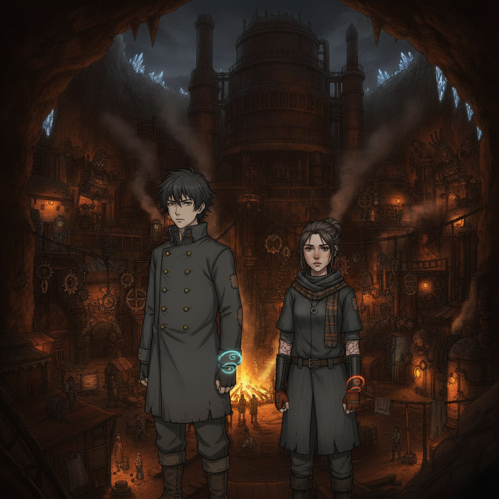
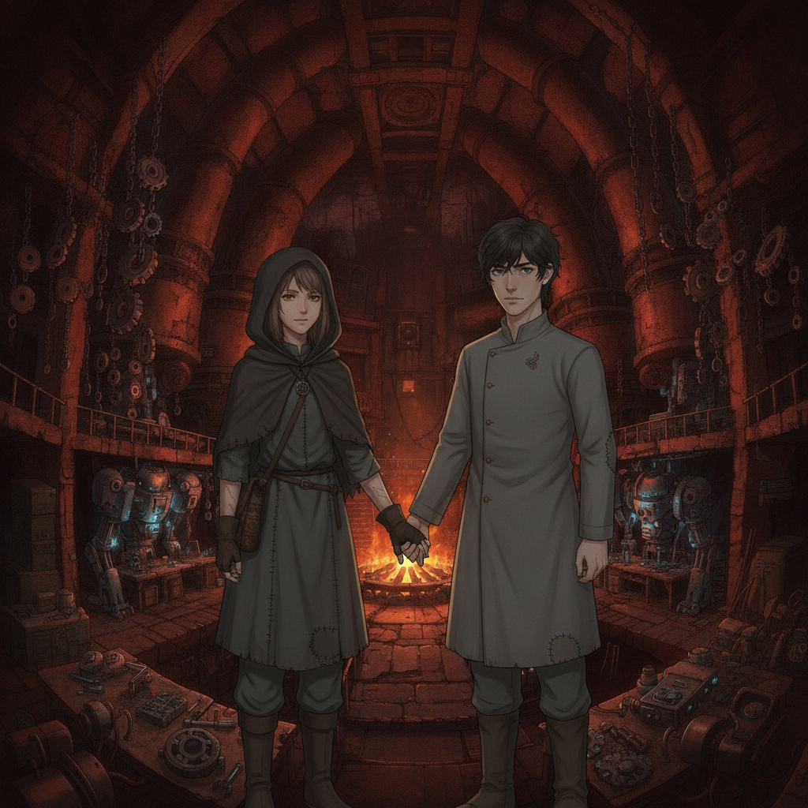
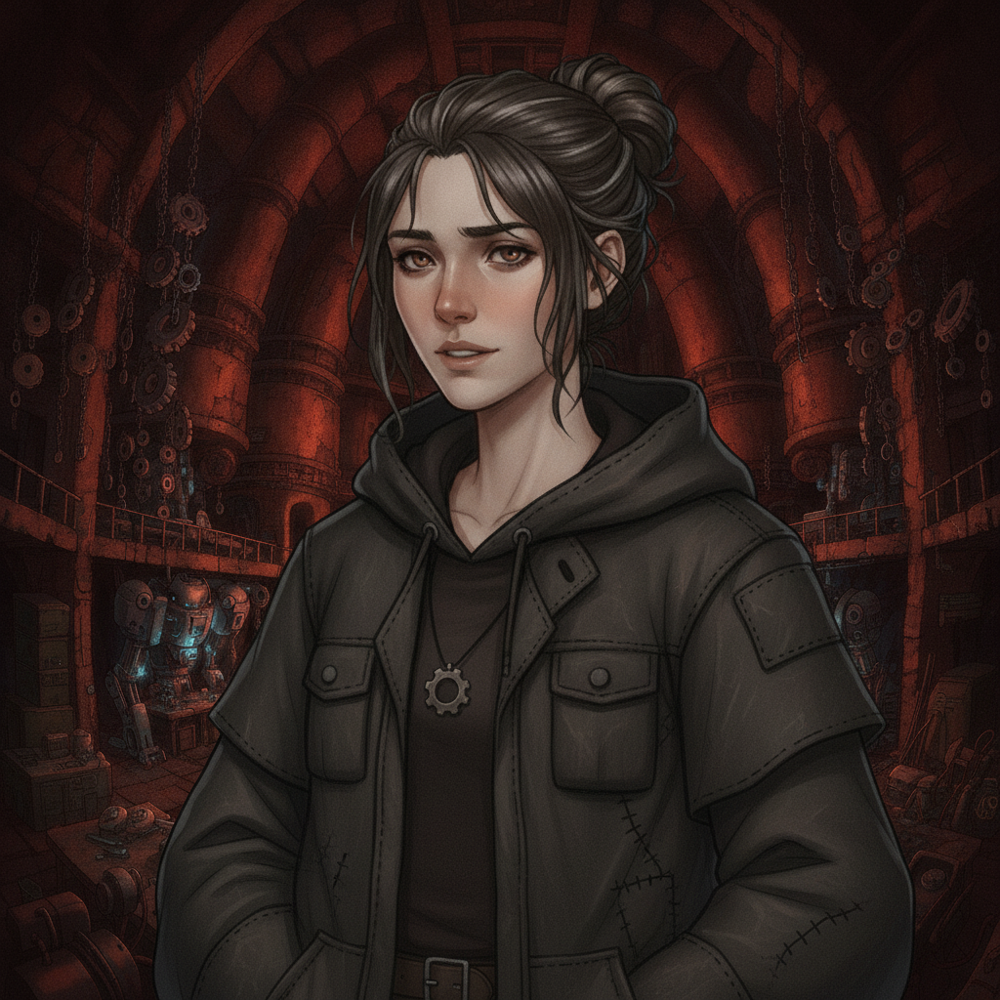
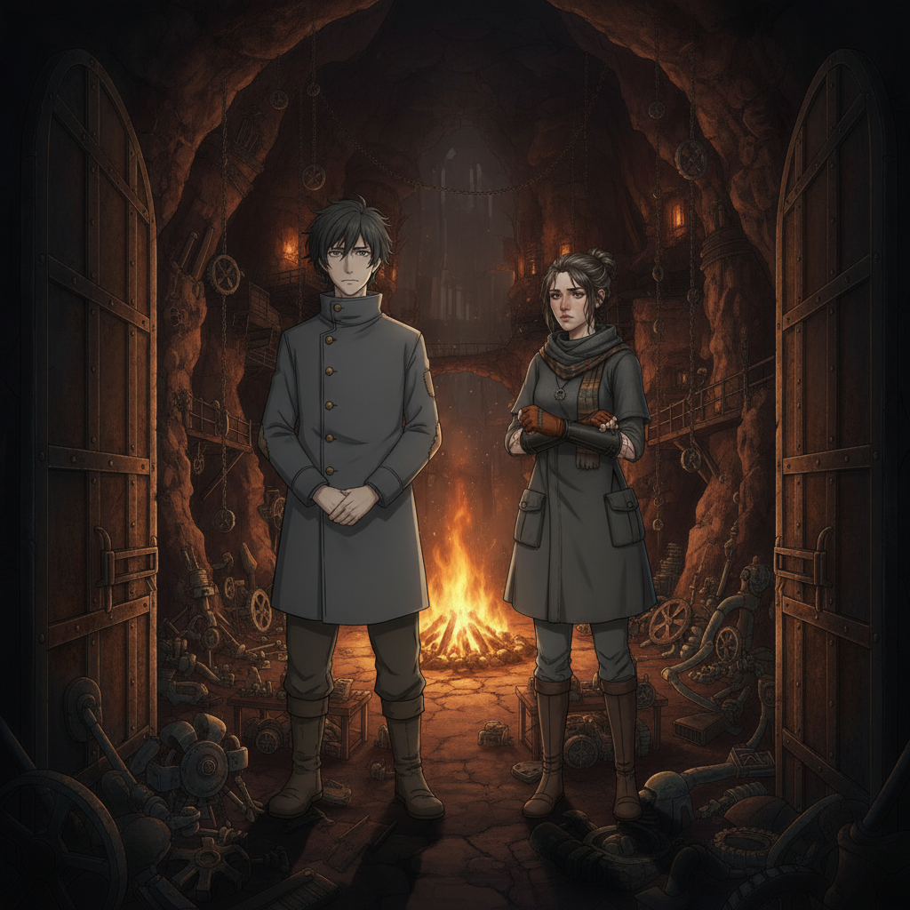

The Ashen Circle Haven is lit not by forge-fire, but by the warm, steady glow of a communal hearth. The air is filled with the quiet murmur of the discarded, the survivors, the people who were never meant to win.

This is our wedding. Wren stands beside me, her usual guarded expression softened, her gloved hands holding mine. For the first time, she is trusted, wholly, by someone who never sold her.
Caedon Vale“I see you, Wren. All of you. And I'm not going anywhere.”

Wren Ashfield“I know.”

Among the people who took us in, who fought alongside us, we exchange our vows. A promise not of grandeur, but of quiet, fierce loyalty. A future built not on power, but on trust. The end.